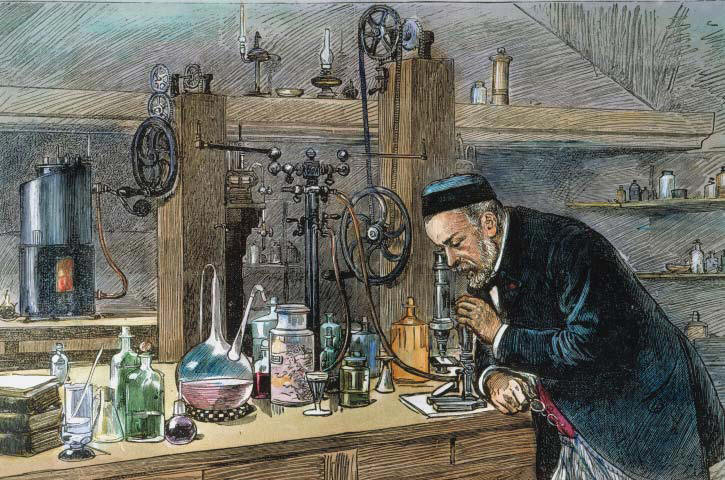

Introduction
Most people gets turn off by statistics; but the reality is that Stats have not only allow human development, but we use stats, without even knowing, for almost every life choice that we make.
In theory, Statistics requires some mathematical background, but in practice, stats are simply creating knowledge/information from observations/data.
Let me provide an example that I find pretty cool.
In the late 1879, just before going into holidays, Louis Pasteur told one of his assistants to inject chickens with a fresh culture of Cholera as part of an experiment to find a vaccine.
By the way, thanks to this guy, Pasteur, you have milk for breakfast this morning; he was the one who discovered Pasteurization or the process to sterilize food without damaging its flavors, which allowed to store highly perishable foods for long time.
Moving on with the story… I presume Pasteur’s assistant have a few other things to do that day, or may be he just wanted to go to his holidays; he not only forgot to inoculate the chickens, he left the bacterial culture outside.
A month later, upon returning from holidays, the assistant injected the chickens with the old culture, but nothing happened to the chickens.
For a moment, put yourself in the position of Pasteur and think what you would have done?.
Sad to admit, but I probably would have been upset. I would have interpreted the action as careless, plus what a psychological torture for the poor chickens staring for a month to a lethal doses of bacteria.
In addition, and more sadly, I probably would have interpreted the results of nothing happening to the chickens, as simply the bacterial culture got ruined from being outside for so long. I would have restarted the experiment with new chickens and new bacterial cultures.
What would you have thought about the result of this “failed” experiment?. Take a moment to think.

Figure 0.1: Pasteur
Intriguingly, Pasteur told the assistant to inoculate the chickens again with fresh bacterial cultures and after a while they observed that the chickens got mildly sick but they did not succumb to the deadly bacteria. The chickens were immune to the bacteria.
Essentially, Pasteour just made one of the major discoveries of humanity: a vaccine.
This discovery came to be called Attenuated Vaccine, in which the virulence of bacteria is reduced by oxygen allowing the body to fight the bug.
The method saved millions of chickens, and people as well. The method was used against many other deadly diseases, and put Pasteur in the history books.
Nothing is known about what happened to the lab assistant.
There are several things that made this case a very successful story. Obviously, Pasteur knew very well what he was doing to get even the smallest of hints from what most other people would have interpreted as failure, but he was also very methodic and knew his stats very well. He was able to gather knowledge from observations. He applied statistics very well.
That is a game-changer example about the use of statistics. But as mentioned earlier, stats are used almost all the time, in almost every decision we made.
Even simple things like the clothes that you are wearing right now was a choice you made most likely based on stats.
If this morning was cold, you probably choose to wear a jacked. Feeling cold was you taking data that then you use analytically to make the decision to wear a jacket.
The aim of this class is to give you basic i) methodological, ii) analytical, and iii) data visualization skills on stats.
In a nutshell, I want you to learn how to identify a question, define a protocol to respond it, analyze the data collected, and display your results convincingly.